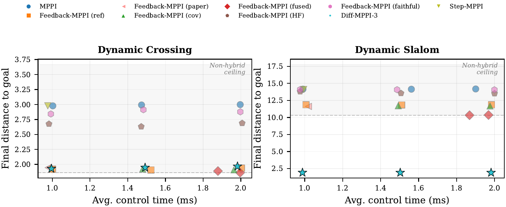
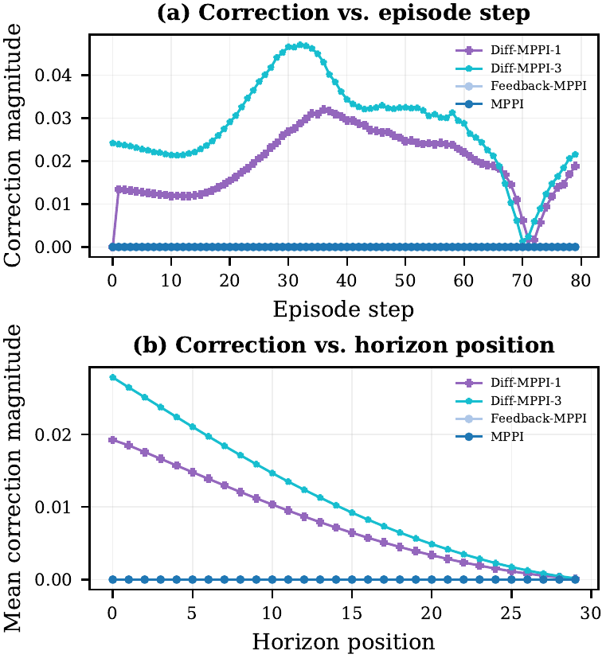
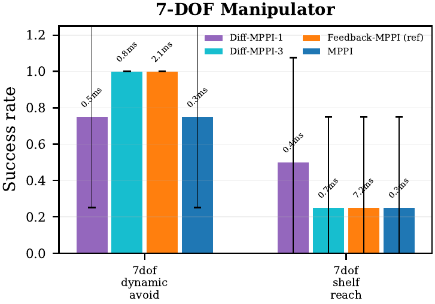
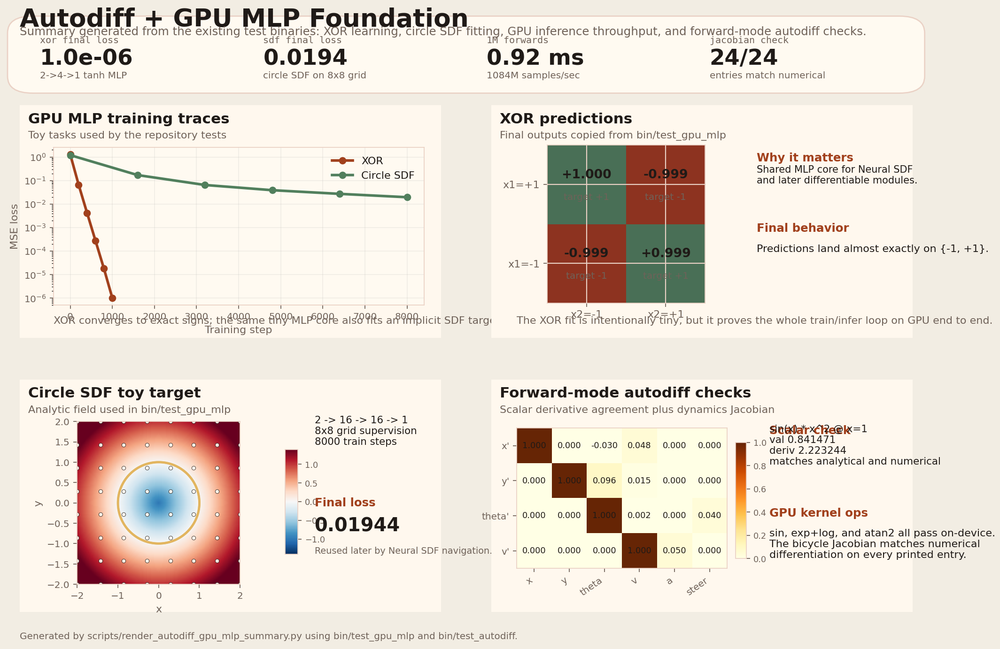
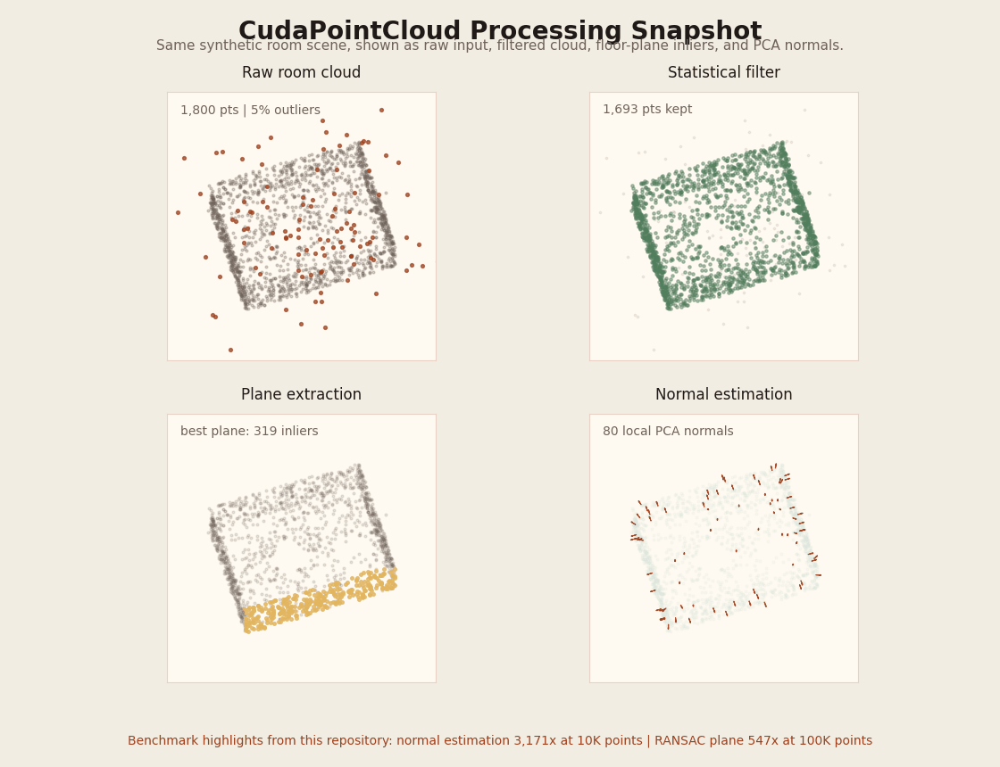

CudaRobotics: More Compute, Better Behavior
CUDA C++ implementations of classic and research-style robotics algorithms. The current flagship is Diff-MPPI: a short training-free gradient refinement on top of MPPI that changes the compute-quality frontier on hard dynamic-obstacle tasks under matched-time comparison. Around that core, the repository also includes neural SDF navigation, GPU learning systems, point-cloud processing, and large-scale optimization on a single consumer GPU.
Current takeaways
Updated from the repository state on 2026-04-15.
Flagship result: hard dynamic navigation
In the submission-critical fixed-controller exact-time table on dynamic_slalom at
1.0 ms, diff_mppi_3 is the only successful controller
(dist 1.90). The strongest non-hybrid row, feedback_mppi_fused,
still ends at 10.33, while mppi stays at 14.15.
7-DOF manipulator
On 7dof_dynamic_avoid at K=512, diff_mppi_3 reaches
success=1.00 at 0.84 ms, while feedback_mppi_ref reaches
0.75 at 4.01 ms. The hybrid controller is 4.8x faster and more reliable
on this 14-dimensional manipulation task.
Why the gain is not just sampling
The stronger paper-style feedback proxy feedback_mppi_paper and the learned-sampling
baseline step_mppi both fail to close the hard-task gap. The result is not just
"more samples" and not just "better feedback": the short gradient correction changes the behavior.
MuJoCo transfer checks
Standardized InvertedPendulum-v4 and Reacher pilots were added as
transfer checks. They show the controller stack ports cleanly outside the custom suite, but they are
intentionally not presented as decisive hybrid-only wins.
Neural SDF navigation
The repository learns 2D signed distance fields with a GPU MLP and uses them for both potential-field planning and MPPI rollouts on non-circular obstacle layouts.
Side-by-side GIFs against circle-based approximationsGPU learning and optimization
GPU REINFORCE improves MiniIsaac CartPole survival from about 82.6 to
180.4 steps, while neuroevolution and swarm solvers run thousands of candidates in parallel.
Diff-MPPI
The strongest current story is a narrow one: dynamic-obstacle exact-time wins are the headline, mechanism plots explain why they happen, and 7-DOF provides the higher-dimensional support point.
| Benchmark | Comparison | Current result |
|---|---|---|
dynamic_slalom, fixed-controller exact 1.0 ms |
mppi, step_mppi, feedback_mppi_ref, feedback_mppi_paper, feedback_mppi_fused, diff_mppi_3 |
Only diff_mppi_3 succeeds at 1.90. Best non-hybrid: feedback_mppi_fused at 10.33. |
dynamic_slalom, family-level exact-time robustness |
Best non-hybrid family vs best Diff family under 1.0 / 1.5 / 2.0 ms |
Best non-hybrid family still fails the hard task. Best Diff family succeeds at 1.84 / 1.84 / 1.88 final distance. |
7dof_dynamic_avoid, K=512 |
diff_mppi_3 vs feedback_mppi_ref vs mppi |
diff_mppi_3: success=1.00 @ 0.84 ms. feedback_mppi_ref: 0.75 @ 4.01 ms. mppi: 0.25 @ 0.39 ms. |
7dof_dynamic_avoid, exact-time follow-up |
3.0 / 5.0 ms family-level multi-param sweep |
Mixed. Both feedback and Diff families can reach success 1.00, so the main manipulation claim stays on the fixed-budget K=512 point. |
MuJoCo InvertedPendulum-v4 and Reacher |
Transfer and standardization checks | Useful for external validity, but not a decisive hybrid-only win. They stay as support material rather than the headline result. |





7dof_dynamic_avoid.Ablation: Sampling vs Gradient
Isolating the contribution of sampling and gradient refinement on dynamic_slalom at K=1024. Neither component alone crosses the success boundary.
| Controller | Mechanism | Success | Final dist | Interpretation |
|---|---|---|---|---|
mppi |
Sampling only | 0.00 | 14.23 |
Vanilla MPPI cannot solve the hard dynamic task at this fixed budget |
step_mppi |
Better sampling (learned bias) | 0.00 | 14.25 |
Online-adapted sampling distribution performs at vanilla MPPI level |
grad_only_3 |
Gradient only (no sampling) | 0.00 | 44.77 |
Gradient descent without a good initial trajectory diverges |
diff_mppi_3 |
Sampling + gradient | 1.00 | 1.91 |
Only the hybrid succeeds: MPPI provides the basin, gradients refine it |
Step-MPPI baseline note
step_mppi (online-adapted sampling bias, inspired by
Step-MPPI, arXiv:2604.01539) performs at vanilla MPPI level
on the hard dynamic task at K=1024 (final dist 14.25 vs 14.23).
This confirms that learned sampling alone cannot solve dynamic obstacle tasks where the cost landscape
changes faster than the sampling distribution can adapt. The gradient refinement in diff_mppi_3
provides a fundamentally different mechanism: explicit cost minimization that can track rapid cost changes
within a single planning cycle.
Neural SDF, MiniIsaac, Point Clouds, Swarm
These are useful repository-level results even though Diff-MPPI is the current main research thread.

Autodiff + GPU MLP Foundation
The summary figure is generated directly from bin/test_autodiff and bin/test_gpu_mlp.
It packages XOR learning, circle-SDF fitting, million-sample inference throughput, and Jacobian checks
into one reader-facing artifact.

Neural SDF Navigation
GPU MLP SDF learning, potential-field planning, and MPPI on non-circular obstacles.

SDF Quality
Learned signed distance field against the analytic reference field.

Parallel CartPole RL
Custom GPU-parallel CartPole environment with REINFORCE. Survival improves from 82.6 to 180.4 steps in 160 generations.

MiniIsaac Parallel Sim
Thousands of nonlinear CartPole environments simulated in parallel on GPU.

GPU Neuroevolution
Parallel evolution of 4096 neural policies with replay and learning-curve comparisons.

Swarm Optimization
GPU PSO, DE, CMA-ES, and ACO with animated convergence comparisons.
CudaPointCloud
Multi-scale benchmark (1K–100K points). Both CPU and GPU use the same brute-force algorithms (no KD-trees). GPU times include device sync. Supports --ply, --kitti, --xyz file input.

What the GIF shows
The synthetic room scene used by benchmark_pointcloud is rotated through the same four views
that matter for the pipeline: raw input with outliers, statistical filtering, dominant-plane extraction,
and normal estimation.
The table below keeps the throughput story, but the GIF makes the processing stages concrete instead of leaving CudaPointCloud as numbers only.
Visual pipeline: input -> filter -> plane -> normals| Points | Operation | CPU | GPU | Speedup |
|---|---|---|---|---|
| 1,000 | Voxel Grid | 0.67 ms | 1.76 ms | 0.4x (GPU loses) |
| 5,000 | Normal Estimation | 4,024 ms | 2.08 ms | 1,933x |
| 10,000 | Normal Estimation | 15,487 ms | 4.88 ms | 3,171x |
| 50,000 | RANSAC Plane | 1,518 ms | 2.78 ms | 546x |
| 100,000 | RANSAC Plane | 3,077 ms | 5.62 ms | 547x |